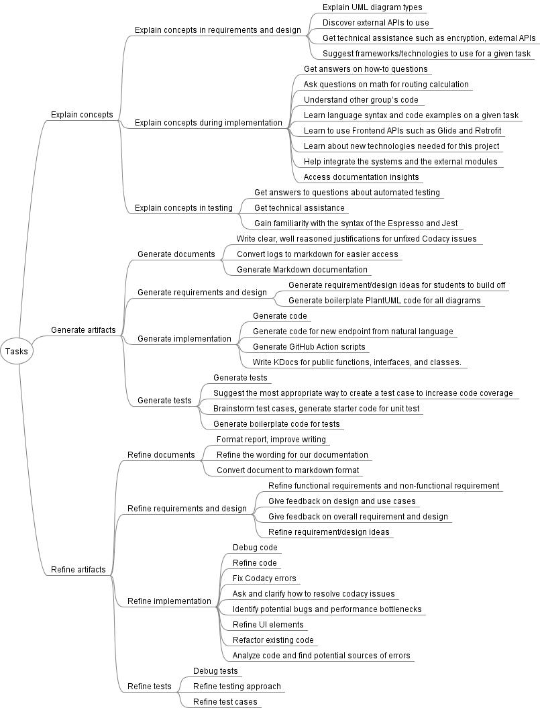

3. RQ1: Coding Process and Results
Coding Process
Two authors independently analyzed students’ AI reflections for milestones M3-M5, to extract three types of information: (1) the GenAI tools used, (2) the tasks for which these tools were used, and (3) students' perceptions of the usefulness of GenAI tools for each task.
For (1), we extracted the tool names from students' answers directly.
For (2) , we used open coding – a qualitative data analysis technique borrowed from grounded theory – to identify concepts, i.e., key ideas contained in students' reflections. During open coding, we identified phrases that best described the tasks students performed. We then used axial coding to group tasks into subcategories and categories.
We further used task categories to extract (3) students’ opinions on GenAI usefulness for each task. We, again, used open coding to identify concepts that described students’ impressions of GenAI usefulness for each task. We then used axial coding to group impressions to their subcategories and categories.
The two coders initially agreed on approximately 79% of all coding decisions for (2) and 86% for (3), reflecting the exploratory nature of the coding process. Disagreements (e.g., arising from different interpretations of student reflections) were first discussed between the two coders and resolved, when possible. The unresolved cases (4% and 2%, respectively) were discussed with all authors of the paper, to reach consensus.
Task Coding Results

Impression Coding Results